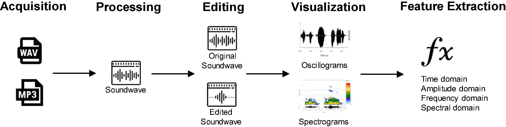

The Voice Analytics Pipeline
In the world of voice analytics, where the intricacies of human communication are decoded, there exists a well-defined journey—a pipeline, if you will—that unfolds in a sequence of meticulously orchestrated steps. These steps collectively constitute the Voice Analytics Pipeline, a fundamental framework that guides researchers through the intricate process of deciphering the language of sound. Within this pipeline, we navigate from the raw acoustic signals to profound insights into vocal interactions, human emotions, and psychological states.
Our comprehensive voice analytics pipeline takes us on a voyage, starting from the raw sound data and leading us to enlightening discoveries. It empowers us to delve into the subtle intricacies of human communication and emotional expression. Below, you’ll find a visual representation that provides a bird’s-eye view of the essential stages within the voice analytics process. Following that, we offer detailed descriptions of each of these critical steps, guiding you through the journey of understanding the rich tapestry of human voices and their meanings.

1. Data Acquisition
The voice analytics journey starts with the acquisition of the required data. This initial phase carries profound significance as it essentially lays the cornerstone upon which the subsequent analytical processes will rest. To embark on this endeavor effectively, it is imperative to meticulously articulate and define the research problem you intend to address. This initial definition is the compass that guides the nature and source of the requisite data.
Once we haveve pinpointed our research goal, it is time to decide where to gather our sound data from. We have some options here. We can venture into the vast landscape of the internet to find audio clips by scraping them, or we can set up experiments to generate our own audio data.
Should you choose the experimental route, you’ll find yourself at a crossroads once again, with some interesting decisions to make. You can opt for a crowdsourced approach, leveraging platforms such as Prolific to enlist the participation of individuals from diverse backgrounds. Alternatively, you can adopt a more traditional experimental approach, where you physically record participants in a controlled environment.
However, it’s imperative to bear in mind that each of these approaches carries its own set of implications, particularly concerning data representativeness and quality. The choices you make in this regard can have far-reaching consequences for the validity and reliability of your research findings.
2. Processing & Editing
Once collected, the data undergoes meticulous editing and processing. This critical step serves to refine the dataset and prepare it for subsequent analysis. During this phase:
Irrelevant sections, such as background noise or extended periods of silence, are carefully removed. This meticulous cleaning ensures that the ensuing analysis is centered on the most pertinent audio segments.
Researchers may employ techniques for noise reduction and enhancement to improve the overall quality of the audio data. This is particularly important when dealing with recordings of varying audio quality.
Specific segments of interest can be selected, allowing for a more focused examination of vocal interactions. This targeted approach is especially valuable when investigating particular aspects of communication.
By diligently executing these preprocessing steps, researchers can ensure that their audio data is ready for in-depth analysis, setting the stage for robust and insightful findings in the field of voice analytics.
3. Visualizing Sound
Delving into the depths of sound data requires more than just hearing; an initial step to achieve so is the transformation of the raw soundwave data into visually accessible representations. This transformative process unveils hidden facets of vocal interactions, bridging the chasm that separates raw audio from meaningful analysis. Drawing inspiration from the principles of data visualization, this pivotal step serves as the linchpin in uncovering intricate patterns, subtle nuances, and intriguing anomalies concealed within the rich tapestry of audio data.
3.1 Amplitude Visualization
Amplitude, a fundamental characteristic of sound, is often a primary focus in audio analysis. Visualizations like oscillograms are employed to represent amplitude variations over time. This graphical representation offers a visual insight into loudness changes throughout the audio recording. Researchers can use oscillograms to identify shifts in volume and intensity, aiding in the interpretation of emotional tones or emphasis in spoken words.
3.2 Frequency Analysis
Frequency analysis is another pivotal aspect of sound data visualization. It involves the exploration of pitch and tonal variations within the audio. While the auditory perception of pitch is inherent, visualizing these variations can provide additional context. Graphs displaying frequency changes over time offer researchers a visual representation of how vocal characteristics evolve throughout an interaction. This can be instrumental in discerning shifts in conversation dynamics or identifying unique speech patterns.
3.3 Multidimensional Representations
Spectrograms are a prime example of multidimensional representations used in voice analytics. They go beyond traditional amplitude and frequency graphs by offering a comprehensive view of audio data. Spectrograms display time on the x-axis, frequency on the y-axis, and variations in amplitude through color gradients. This multidimensional approach enables researchers to pinpoint specific moments of interest within an audio recording. It aids in the detection of simultaneous speech patterns, background noises, or other acoustic phenomena that may impact the analysis.
These visualizations not only enhance our comprehension of sound data but also provide a foundation for subsequent analysis. By converting raw audio into graphical forms, researchers can uncover hidden insights, patterns, and trends that might otherwise remain concealed. This data visualization process stands as a powerful tool in the hands of researchers, facilitating a deeper understanding of vocal interactions in the context of voice analytics.
4. Extracting and Analyzing Vocal Features
Extracting key vocal features is central to the voice analytics process. These features span multiple dimensions of speech and include:
Duration (time domain): Measuring the length of sound utterances in seconds or milliseconds.
Loudness (amplitude domain): Quantifying the power or loudness of speech, often using metrics like ‘sone.’
Pitch and Variability (frequency domain): Analyzing the fundamental frequency of a speaker’s voice and its variability over time.
Spectral Qualities (spectral domain): Assessing the perturbance or periodicity of soundwaves, which includes features like vocal jitter, shimmer, entropy, and harmonicity.
These extracted vocal features serve as essential building blocks for subsequent analysis, allowing researchers to delve deeper into the nuances of vocal communication.
The final stage involves a systematic analysis of the extracted vocal features. This examination spans across different dimensions, including time, amplitude, frequency, and the spectral domain. Analysts assess changes in loudness, speech duration, pitch variations, and spectral characteristics. By interpreting these changes, researchers can unravel valuable insights into the emotional and psychological states of speakers during their interactions. For instance, increased loudness or pitch variability may indicate heightened emotions such as anger or frustration, while spectral qualities can reveal further nuances in the speaker’s emotional state.